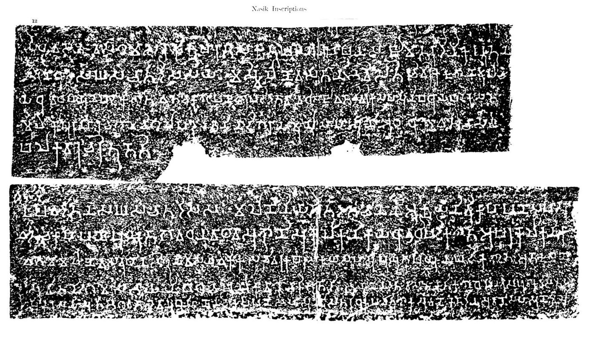

Chapter 4: Guilds and Merchant Associations¶
Chapter Overview
Associations of artisans and merchants — śreṇī, pūga, gaṇa, nigama and their Pali and Prakrit equivalents — appear in Indian sources from the late centuries BCE and remain visible, under changing names, into the early modern period. This chapter sets out the vocabulary, the literary and legal evidence (Jātakas, Pāṇini, the Arthaśāstra, the dharmaśāstra), and the epigraphic record that gives the institution its firmest outline: the Nasik endowments, the Mandasor weavers, the Vaiśālī sealings, and the great south Indian merchant bodies such as the Ayyāvoḷe Five Hundred and Maṇigrāmam. It ends with the relation between guild and caste, the later history of the mahājan, and a short comparison with guilds elsewhere.
4.1 Terms and Categories¶
No single Sanskrit word corresponds exactly to the English “guild”, and the sources use several overlapping terms whose meaning shifted over time and between genres (Majumdar 1918; Thaplyal 1996).
- Śreṇī (Pali seṇi).
- The commonest term: a body of people following the same craft or trade, such as weavers, potters, oil-pressers or goldsmiths. In inscriptions it is the usual word for a corporate body that could receive deposits and make gifts.
- Pūga.
- An association whose basis is less clear. Medieval commentators on Yājñavalkya explain it as a group of people of different castes and occupations living in one place, in contrast to the śreṇī of a single craft; modern scholars have read it variously as a local assembly or a looser commercial association (Kane 1930).
- Gaṇa and saṃgha.
- In Pāṇini and early Buddhist texts these words name non-monarchical polities (the “republics” of the older literature) as well as corporate groups; in the dharmaśāstra gaṇa can denote a body of families or of brāhmaṇas, and the Buddhist monastic community is the saṃgha. The terms do not by themselves indicate an economic association.
- Nigama and naigama.
- Nigama means both a market town and the body of its merchants or townsmen; naigama is a member of such a body. Inscriptions record gifts by a nigama, and Gupta-period sealings name the nigama of bankers, caravan traders and artisans (Section 4.6).
- Sārtha and sārthavāha.
- The caravan and its leader. The sārthavāha organised a temporary association of merchants for a journey; caravan law and the ethics of the caravan leader are a recurring theme of Buddhist and Jain narrative (see Chapter 10).
- Śreṣṭhin (Pali seṭṭhi).
- Literally “the foremost”: a wealthy merchant or banker, sometimes the head of a guild or of the merchants of a town. In the Pali Canon the seṭṭhi is above all a man of great wealth, like Anāthapiṇḍika of Sāvatthī, rather than a guild officer (Chakravarti 1987).
- Jeṭṭhaka and pamukha.
- Pali words for the “elder” or “chief” of an occupational group, as in the Jātaka expressions for the chief of the smiths or of the carpenters.
Later sources add many more terms: the kulika (a merchant or artisan of standing) and prathama-kulika of Gupta Bengal, the nagaram (the merchant body of a Tamil market town), and the names of the supra-local south Indian associations discussed in Section 4.7. Using “guild” for all of these is a convenience; it does not imply a uniform institution.
4.2 Origins: Literary and Legal Evidence¶
4.2.1 Vedic Background¶
The Ṛgveda speaks of the paṇi, often hostile figures whom some scholars have connected with traders, and later Vedic texts use gaṇa, vrāta and śreṣṭhin. None of these passages describes an occupational association with rules and property, and attempts to trace guilds back to the Vedic period rest on the later meanings of words (Thapar 2002). The institution becomes visible only with the second urbanisation of the Ganges valley in the second half of the first millennium BCE.
4.2.2 The Jātakas and the Pali Canon¶
The Jātaka stories are the richest narrative source for early guilds. They speak, apparently as a conventional figure, of “the eighteen guilds” (aṭṭhārasa seṇiyo) without giving a fixed list, and they mention the chiefs (jeṭṭhaka, pamukha) of smiths, carpenters, garland-makers and other crafts, villages of carpenters or smiths, caravans under a sārthavāha, and wealthy seṭṭhis who had the ear of the king (Majumdar 1918; Chakravarti 2002).
The Jātakas must be used with care. The verses are older than the prose stories, and the prose commentary in which most of the social detail appears (the Jātakaṭṭhakathā) was compiled in Sri Lanka in about the fifth century CE. The material therefore mixes older tradition with later conditions and cannot be read as a simple picture of the sixth or fifth century BCE. The canonical suttas and the Vinaya give firmer, if thinner, evidence of urban merchants and householders (gahapati) as patrons of the early saṃgha (Chakravarti 1987).
4.2.3 Pāṇini¶
Pāṇini’s grammar (c. 4th c. BCE) contains rules for forming words that denote members of a pūga, a vrāta (a band living by labour or arms) and a saṃgha, and it uses śreṇī in the sense of a group or row. These rules show that corporate groups were familiar enough to need their own derivational patterns; they do not tell us how such groups were organised (Majumdar 1918).
4.2.4 The Dharmasūtras and the Arthaśāstra¶
The Gautama Dharmasūtra (probably 3rd–2nd c. BCE, on Olivelle’s dating) states that farmers, traders, herdsmen, moneylenders and artisans have authority over the rules of their own groups, and that the laws of regions, castes and families are authoritative where they do not conflict with the Veda (Olivelle 1999, GDh 11.20–21). This principle — that the king recognises and enforces the customary law of groups — runs through the whole later legal literature.
The Arthaśāstra (Chapter 2) mentions the śreṇī in many contexts (Olivelle 2013; Kangle 1960). Among the kinds of troops a king may raise are corporation troops (śreṇībala), and the book on confederations (saṃgha, AŚ 11.1) distinguishes groups that live by trade and agriculture as well as by arms (AŚ 9.2, 11.1). The records office is to register the customary law of regions, villages, castes, families and corporate groups (AŚ 2.7). In the book on the “removal of thorns”, artisans who accept materials from clients are to be guaranteed by their guild, which is made answerable if the artisan defaults (AŚ 4.1), and traders who combine to hold back goods or to sell at an improper price are heavily fined (AŚ 4.2). The law of workers and of partnership (saṃbhūya-samutthāna, literally “undertaking together”) provides that guild workers and partners divide their earnings as agreed or equally (AŚ 3.14; see Chapter 6).
The overall stance is that of a government that values the productive and military capacity of corporate groups but is wary of their collective power. The book on saṃghas advises the king to win over or divide confederations rather than confront them. About the internal organisation of guilds the text says little.
4.3 Organisation and Leadership¶
What we know of internal organisation comes mostly from the later dharmaśāstra and from inscriptions, and it is fragmentary. A guild had a head — called śreṇī-mukhya, jyeṣṭhaka, pramukha or simply śreṣṭhin — and, according to the later smṛtis, a small number of executive officers. The Bṛhaspatismṛti, known only from quotations in medieval digests, recommends that two, three or five persons who speak for the welfare of the group be appointed as “executives” (kāryacintaka), and the Yājñavalkyasmṛti expects such officers to be honest, learned and free from greed (Kane 1930; Majumdar 1918).
The rules of a group are usually called samaya or saṃvid (“convention, compact”), and the texts insist that members abide by them. They say much less about how the rules were made. R. C. Majumdar and other writers of the early twentieth century described the guild as a self-governing, almost democratic body (Majumdar 1918); the sources show executive officers and a duty to obey the group’s compacts, but not how officers were chosen. Leadership was probably held by the wealthiest and most senior members, and in many crafts it passed within families.
Apprenticeship is treated in the dharmaśāstra under the title of the pupil who has undertaken to learn a craft: Nārada sets out how the apprentice lives with the master, receives food and training, and must not leave before the agreed period (Kane 1930). These are rules for an individual contract between master and pupil, not evidence of a guild-run training system, although in practice much skill must have been learnt within families and workshops that were also guild members.
Guilds could own property and hold funds. The inscriptions discussed below show them receiving permanent deposits and paying interest from them, and some show them building or repairing temples and halls. The texts do not say how the common fund was administered.
4.4 Recognition in Dharmaśāstra¶
The legal texts treat corporate groups in three ways: as a source of law, as a level of adjudication, and as parties to compacts whose breach the king must punish.
Manusmṛti 8.41
jātijānapadān dharmān śreṇīdharmāṃś ca dharmavit
samīkṣya kuladharmāṃś ca svadharmaṃ pratipādayet
“A king who knows the law should examine the laws of castes, of regions, of guilds and of families, and then settle the law proper to each” (Olivelle 2004).
A source of law. Manu (c. 2nd c. CE) requires the king to take account of the law of guilds when deciding cases (8.41), and the same principle appears in Yājñavalkya (c. 4th–5th c. CE) and Nārada (c. 5th–6th c. CE). Yājñavalkya’s section on the breach of compacts (saṃvid-vyatikrama, 2.186–192) ends by extending its rules to guilds (śreṇī), merchant bodies (naigama), religious sects (pāṣaṇḍin) and gaṇas, and by directing the king to preserve their distinctive usages and former practice (Kane 1930).
A level of adjudication. Yājñavalkya (2.30) and Nārada list families, guilds and pūgas, together with officers appointed by the king, as bodies that hear disputes, each later one carrying more weight than the one before it. In other words, guild tribunals were recognised as courts of first resort for disputes within their competence, below the royal court (Kane 1930).
Compacts and their breach. Manu (8.219) prescribes banishment for a man who, out of greed, breaks a compact sworn with a village, a region or a corporate body. Yājñavalkya adds confiscation for one who misappropriates the common property of a group or breaks its compact, and Nārada’s title on the “non-observance of conventions” (samayasyānapākarma) directs the king to uphold the conventions of guilds, merchant bodies, pūgas and similar groups. The later smṛtis of Bṛhaspati and Kātyāyana, quoted in the medieval digests, go further into the duties of executive officers, the expulsion of members and the limits of a group’s authority: rules that are contrary to the king’s interest or to morality are not to be enforced (Kane 1930).
Scholarly Note: Corporate personality?
Older writers argued that dharmaśāstra recognised the guild as a “legal person” centuries before European law. The texts do treat a group as able to own property, to make compacts and to be harmed by a member’s breach. But they do not formulate a general doctrine of corporate personality, and comparisons that make India “earlier” than Roman or medieval European law (which recognised the collegium and universitas) are not helpful. What the dharmaśāstra offers is a consistent principle of deference to group custom, within limits set by the king and by dharma (Kane 1930; Thaplyal 1996).
4.5 Guilds as Trustees: Permanent Endowments¶
The firmest evidence that guilds handled money comes from inscriptions recording permanent endowments: a donor deposited a capital sum with a guild, which kept the principal and paid an agreed interest, from which a religious or charitable purpose was funded in perpetuity. Later sources call this an akṣaya-nīvī (“undecaying capital”) (Thaplyal 1996; Ray 1986).
4.5.1 The Nasik Endowments of Uṣavadāta¶
The best known record is an inscription in Cave 10 at Nasik of Uṣavadāta (Ṛṣabhadatta), son-in-law of the Kṣaharāta ruler Nahapāna. It is dated in the year 42, which most scholars take to be of the Śaka era (c. 120 CE), though this is debated. Uṣavadāta records that he invested 3,000 kārṣāpaṇas for the monks of the four quarters living in the cave: 2,000 with a guild of weavers (kolika-nikāya) at Govardhana, at interest of one per cent per month, and 1,000 with another weavers’ guild there, at three-quarters per cent per month (Lüders 1912; Ray 1986). The inscription is reproduced in Figure 4.1.
The capital was not to be repaid; only the interest was to be used. The interest on the first sum provided a robe allowance of 12 kārṣāpaṇas for each of the twenty monks who spent the rains in the cave, and that on the second sum went to a further allowance for the monks. The figures are internally consistent: one per cent a month on 2,000 gives 240 kārṣāpaṇas a year, or 12 each for 20 monks. The inscription adds that the gift was proclaimed in the town assembly (nigama-sabhā) and registered according to custom — direct evidence of a public record of such investments.


The annual equivalent rates of about 12 and 9 per cent are well below the rates for commercial loans in the legal texts (Chapter 6). They suggest that guilds regarded the deposits as a secure, low-cost source of capital and that donors valued the permanence of a corporate trustee more than a high return.
A later inscription at Nasik, of the reign of the Ābhīra king Īśvarasena, records a similar endowment by a lay woman with several guilds at Govardhana, including potters and oil-millers, to provide medicine for sick monks. Other inscriptions in the western Deccan caves record gifts by guild members and by nigamas (Lüders 1912; Ray 1986).
4.5.2 Mathura and the Gupta Period¶
An inscription of the reign of the Kuṣāṇa king Huviṣka at Mathura records an akṣaya-nīvī of purāṇa coins divided between two guilds, one of them a guild of flour-makers, the interest on which was to feed brāhmaṇas and the needy at a hall of charity (Thaplyal 1996). In the Gupta period the Indor copper plate of Skandagupta (Gupta year 146, i.e. 465 CE), from Indor in the Bulandshahr district of Uttar Pradesh (not Indore in Madhya Pradesh), records that a brāhmaṇa deposited money with the guild of oil-men of Indrapura on condition that the guild supply oil in perpetuity for a lamp in a temple of the Sun (Thaplyal 1996; Salomon 1998). Table 4.1 lists selected inscriptions of this kind.
| Record | Date | Guild and purpose |
|---|---|---|
| Nasik, Cave 10 (Uṣavadāta) | Year 42, prob. c. 120 CE | Two weavers’ guilds at Govardhana; 3,000 kārṣāpaṇas at 1% and 0.75% a month; robes and other needs of monks |
| Nasik (Ābhīra Īśvarasena) | c. 3rd c. CE | Several guilds at Govardhana; medicine for sick monks |
| Mathura (Huviṣka) | Kuṣāṇa period | Two guilds, one of flour-makers; feeding at a charity hall |
| Indor plate (Skandagupta) | 465 CE | Oil-men’s guild of Indrapura; lamp for a Sun temple |
| Mandasor (Kumāragupta I and later) | 436–437 and 472–473 CE | Silk-weavers’ guild from Lāṭa; built and repaired a Sun temple |
These records are few compared with the number of guilds that must have existed, and they survive because they concern religious gifts. They tell us that guilds were trusted to hold funds over long periods, at modest and stated rates of interest; they do not show that guilds were general deposit banks lending to the public.
4.6 Seals, Coins and Guilds in Gupta India¶
4.6.1 The Vaiśālī Sealings¶
Excavations at Basarh, ancient Vaiśālī in north Bihar, in the early twentieth century produced hundreds of clay sealings of the Gupta period. Many bear the legend śreṣṭhi-sārthavāha-kulika-nigama — the corporation of bankers (or chief merchants), caravan traders and kulikas — sometimes together with the seal of an individual member, while others name a śreṣṭhi-nigama or a kulika-nigama alone. Sealings were attached to letters and consignments, and their number suggests a busy correspondence. Whether the “corporation” was one body uniting the three groups or a formula naming several bodies is debated (Thaplyal 1996). Sealings of guilds and nigamas are also known from Bhita near Prayagraj.
4.6.2 Guild Coinage¶
Copper coins from Taxila bearing the Brāhmī legend negama (“of the nigama”) together with a name have been interpreted as issues of local merchant bodies in the last centuries BCE (Allan 1936). The interpretation is widely accepted, but these coins are a small, local group; they do not show that guilds generally issued money (see Chapter 5).
4.6.3 Merchants in Local Administration¶
The Damodarpur copper plates from north Bengal (5th–6th c. CE) show the head of a district (viṣayapati) acting together with the chief merchant of the town (nagara-śreṣṭhin), the chief caravan trader (sārthavāha), the chief artisan (prathama-kulika) and the chief scribe (prathama-kāyastha) in sales of land. Leading merchants were thus formally associated with local government in at least one Gupta province (Thaplyal 1996; Chakravarti 2002).
4.6.4 The Mandasor Silk-Weavers¶
The most famous guild inscription is the Mandasor (ancient Daśapura) inscription of the guild of silk-weavers (paṭṭavāya-śreṇī). It is a Sanskrit poem composed by Vatsabhaṭṭi. It records that the weavers migrated from Lāṭa (south Gujarat) to Daśapura, built a temple of the Sun in Mālava year 493 (436–437 CE) under Kumāragupta I and his local governor Bandhuvarman, and repaired it in year 529 (472–473 CE) (Salomon 1998; Thaplyal 1996).
The inscription is valuable for social history. It describes some members of the guild as having taken up other callings — archery, story-telling, astrology, religious life — while remaining in the group, which suggests that the guild was by then a community defined by origin and kinship as much as by craft. It is a literary text and its praise of the weavers is conventional, but the outline of migration, prosperity and diversification is clear.
4.6.5 After the Guptas¶
From the sixth century, inscriptions in western and central India record royal charters confirming the customary rules of merchant communities. The best known, the charter of Viṣṇuṣeṇa (592 CE), sets out a long list of customary regulations (ācāra) for a merchant settlement, covering dues, fines and procedure (Chakravarti 2002). Such documents show rulers negotiating with organised merchant groups rather than simply regulating them.
The older view that guilds and towns declined sharply after c. 600 CE, as part of a process of “feudalisation” and urban decay (Sharma 1987), has been challenged by historians who point to new market centres, regional trade networks and merchant bodies in the early medieval centuries (Chattopadhyaya 1994). The south Indian evidence in particular does not fit a picture of decline.
4.7 South Indian Merchant Associations¶
From the ninth century the Tamil, Kannada and Telugu inscriptions record merchant bodies on a larger scale than the craft guilds of the north. Historians have debated whether “guild” fits them at all: they look less like closed bodies of one trade than like associations or umbrella organisations of merchants, with their own armed retainers, a shared honorific language and links to particular towns (Abraham 1988; Hall 1980; Champakalakshmi 1996).
- Nagaram.
- The merchant body of a market town in the Tamil country, attested widely under the Pallavas and Cholas, which managed the town’s trade, made gifts to temples and dealt with village assemblies and royal officers (Hall 1980).
- The Ayyāvoḷe Five Hundred.
- The “Five Hundred lords of Ayyāvoḷe” (Tamil Ainnūṟṟuvar), named after Ayyāvoḷe, modern Aihole in Karnataka, are recorded in a long series of inscriptions from about the late ninth to the fourteenth century across Karnataka, Andhra and Tamil Nadu. Their inscriptions open with a standard eulogy (praśasti) and speak of fortified merchant towns (eṟivīra-paṭṭaṇam) protected by armed men. The name is closely associated, and sometimes interchangeable, with the Nānādeśi (“of many countries”) and with the Vīra-Baḷañja (Abraham 1988; Champakalakshmi 1996).
- Maṇigrāmam.
- A merchant body first recorded in the Kollam copper plates (below) and in a ninth-century Tamil inscription at Takuapa on the Thai–Malay peninsula; it later appears in Tamil Nadu as well as Kerala (Abraham 1988).
- Añjuvaṇṇam.
- A body associated with merchants from West Asia, including Jews and probably Christians and Muslims; the name is usually derived from Persian hanjaman (“assembly”). In the Jewish copper plates of Cochin (c. 1000 CE) the Cēra king Bhāskara Ravivarman grants the Añjuvaṇṇam with other privileges to Joseph Rabban (Champakalakshmi 1996).
Historical Note: The Kollam (Quilon) copper plates, c. 849 CE
The plates were issued in the fifth regnal year of the Cēra king Sthāṇu Ravi by his governor of Veṇāṭu, Ayyaṉaṭikaḷ Tiruvaṭikaḷ, in favour of the Tarisā church of the Syrian Christian community at Kollam. They grant land and service groups to the church and place the grant under the protection of the Añjuvaṇṇam and the Maṇigrāmam, who are given rights in the town’s trade. The witnesses’ signatures are in Arabic (Kufic), Middle Persian (Pahlavi) and Judaeo-Persian (Hebrew script). The plates show the merchant bodies as guarantors of a royal grant and illustrate the cosmopolitan population of the Malabar ports (Abraham 1988; Champakalakshmi 1996).
Inscriptions of the Five Hundred and of related bodies have been found in Sri Lanka, Myanmar and Sumatra (a Tamil inscription of 1088 CE from Barus), as well as in south India. Their overseas activity, and its relation to Chola policy, is treated in Chapter 12. The south Indian associations did not operate alone: they traded alongside, and sometimes in partnership with, Arab, Persian, Jewish and Chinese merchants, as the Kollam plates themselves show (Goitein and Friedman 2008).
These associations were closely tied to temples and to royal power. They endowed temples, received privileges from kings, and appear in Chola inscriptions as one of several corporate actors alongside the brāhmaṇa sabhā, the village ūr and the nagaram. They employed armed guards and their inscriptions use martial language, but they were not states: there is no evidence that they struck coinage or ruled territory (Hall 1980; Abraham 1988).
4.8 Guild, Caste and Exclusion¶
The relation between guild and caste (jāti) is one of the central questions of Indian social history. Several lines of evidence point to a gradual convergence. Crafts were increasingly hereditary, the dharmaśāstra assigns crafts and trade to particular varṇas and mixed castes, and many later occupational jātis (weavers, oil-pressers, potters, smiths, goldsmiths) correspond to crafts organised earlier as guilds. The Mandasor weavers kept a common identity after migration and even after some members changed occupation, which is the behaviour of a kin-based community rather than a purely professional body. And the legal texts treat the rules of jāti, śreṇī and kula side by side as sources of custom, without a sharp distinction between them.
Historians differ on the direction of causation — whether guilds hardened into castes, or caste-like groups used guild forms — and no single process will fit every region (Thapar 2002; Sharma 1983). What is clear is that guild membership was not open. Admission was controlled by members, often by birth, and the texts and inscriptions say nothing of the many labourers, servants and slaves who worked for guild members. The dharmaśāstra ranks some occupations, such as leather-working, as impure and assigns them to low castes, and the guild record is largely the record of the established. Women appear as donors in the inscriptions (as at Nasik) but not as guild officers.
4.9 Later History and Legacy¶
Guild-like bodies remained part of Indian commercial life long after the classical sources. In Sultanate and Mughal India the merchant and artisan communities of the towns were organised in caste and community associations, generally called mahājan, which regulated trade, settled disputes, organised charity and represented their members before the authorities. The later history of merchant communities and their credit networks is taken up in Chapters 6 and 18; this section follows the associations themselves.
4.9.1 The Mahājan of Gujarati Towns¶
The mahājans of Gujarat are the best documented. In Ahmedabad, founded by the sultans of Gujarat in 1411 and from 1572–73 the capital of a Mughal province, each of the major trades — cloth dealers, bankers and money-changers, dealers in grain, and many crafts — had its own mahājan under a headman (śeṭh), and the merchants of the city as a whole recognised a leading figure with the title of nagarśeṭh (“town merchant”). The mahājan fixed working days and holidays, settled disputes among members, fined those who broke its rules, and could raise levies on its members’ trade for charitable purposes, notably the animal shelters (pāñjarāpoḷ) supported by Jain and Vaiṣṇava merchants (Gillion 1968; Laidlaw 1995).
The best known Ahmedabad merchant of the Mughal period is Śāntidās Jhaverī (d. 1659), a Śvetāmbara Jain jeweller and financier who supplied jewels to the courts of Jahāngīr and Shāh Jahān. He built a temple to Pārśvanātha in the Saraspur quarter of Ahmedabad; when the prince Aurangzeb, as governor of Gujarat in the mid-1640s, had it desecrated and turned into a mosque, Śāntidās appealed to the court, and Shāh Jahān ordered that the building be restored to him. He later obtained imperial orders concerning the Jain pilgrimage centre of Śatruñjaya at Palitana, and he lent money to Prince Murād Bakhsh during the war of succession of 1657–58 (Gillion 1968). His career shows how a merchant leader could use credit, court connections and imperial documents to protect his community’s religious and commercial interests. His descendants held the title of nagarśeṭh of Ahmedabad into the nineteenth century and beyond.
Merchant bodies could act collectively against officials. The most common weapon was the closing of shops (haṛtāl); another was migration. In 1669, after pressure on Hindu merchants at Surat by the city’s religious officials, many bāniyās left Surat for Bharuch and returned only after assurances from the authorities. Pearson and Das Gupta show that such action was effective because the revenue of the Mughal port depended on the merchants’ presence, but also that the merchants rarely sought political power for themselves (Pearson 1976; Das Gupta 1979).
4.9.2 Caste Councils and Occupational Associations¶
The early modern mahājan was usually organised by caste or religious community as well as by trade, and it is often hard to separate it from the caste council (jāti pañcāyat). The two had different starting points. A caste council governed the members of one jāti, whatever they did for a living: it dealt with marriage, commensality, ritual purity and disputes within the caste, and its ultimate sanction was exclusion from the caste. A mahājan of cloth dealers or bankers, by contrast, might include merchants of several castes, Jain and Hindu, who shared a trade and a market. Where an occupation was in the hands of a single caste, as with many groups of weavers, potters or oil-pressers, the council of the caste and the association of the craft were in effect the same body, and it regulated both social and occupational matters (Gillion 1968).
Colonial rule changed the setting of these bodies. British courts were often reluctant to intervene in questions of caste membership, which strengthened caste councils in their own sphere, while commercial disputes came increasingly before the civil courts. Colonial law also reclassified indigenous commercial practices — the joint family firm, the charitable gift, the customary rules of the bazaar — in its own categories, a process that Ritu Birla has studied in detail for the late nineteenth and early twentieth centuries (Birla 2009). Some merchant communities turned their caste organisation into an instrument of business: the Nattukottai Chettiars, for instance, organised credit through lineages and temples whose rules bound their members (Rudner 1994). From the late nineteenth century merchants also formed community associations and chambers of commerce on the European model (Timberg 1978); at the national level, the Federation of Indian Chambers of Commerce and Industry was founded in 1927.
4.9.3 Craft Associations in Colonial India¶
Weavers’ collective action is the best studied case. In south India, weaving castes such as the Kaikkōḷar and Sāliyar had long had their own organisation, linked to temples, and had used migration as a weapon against excessive taxation (Ramaswamy 1985). In the seventeenth and eighteenth centuries artisan and merchant castes in the Tamil country were also grouped in the rival coalitions of the “right-hand” and “left-hand” castes (valaṅkai and iṭaṅkai), whose disputes over precedence and privileges repeatedly disturbed the English settlement at Madras (Arasaratnam 1986). When the English Company, in the later eighteenth century, tried to bind weavers to deliver only to its agents, weavers in the south responded with petitions, collective refusals of advances and desertion of their villages; Prasannan Parthasarathi has argued that these protests show both the strength of the weavers’ organisation and the growing power of the Company to override it (Parthasarathi 2001, 2011).
In the industrial city the word mahājan took on a new meaning. After the Ahmedabad mill strike of 1918, in which Gandhi intervened on the workers’ side, the textile workers of the city formed the Textile Labour Association in 1920, known in Gujarati as the Majūr Mahājan (“workers’ mahājan”), with Anasuya Sarabhai and Gandhi among its founders. It favoured arbitration over strikes, and it became one of the largest unions in India. The name deliberately borrowed the language of the merchant associations of the city, but the institution was new: a union of wage workers, open across castes, negotiating with millowners who were themselves often members of the old merchant mahājans (Gillion 1968).
Modern writers have linked the śreṇī to the cooperative movement and to modern trade associations. These are analogies: the cooperative movement in India grew from the Co-operative Credit Societies Act of 1904 and drew on European models, although it was adapted to Indian conditions. There is no direct institutional descent from the ancient guild.
4.10 Comparison with Guilds Elsewhere¶
Associations of craftsmen and merchants are found in many premodern societies, and the Indian evidence is best read alongside them rather than ranked against them.
-
In the Roman world, collegia of craftsmen and traders are attested from the late Republic and were regulated by the state; in Byzantium the tenth-century Book of the Eparch set out rules for the guilds of Constantinople.
-
In medieval and early modern Europe, merchant and craft guilds (from about the eleventh century) regulated entry, quality and prices, held property, supported members and endowed religious foundations. Sheilagh Ogilvie’s survey argues that they mainly secured advantages for their members and that their benefits for the wider economy have been overstated (Ogilvie 2019).
-
In China, merchant groupings (hang) organised by trade appear in Tang and Song cities, and native-place associations (huiguan) and trade associations (gongsuo) flourished under the Ming and Qing.
-
In the Islamic Middle East, craft and trade groups were organised under market inspectors (muḥtasib), and the question how far they formed autonomous guilds is debated.
The Indian case shares many features with these: control of entry, collective responsibility, endowments, and a negotiated relationship with rulers. Its distinctive traits lie in the legal principle of deference to group custom, the close link with caste, and the scale of some south Indian associations. The same questions that economic historians ask of European guilds — did they lower the costs of trade by enforcing contracts and quality, or did they mainly restrict competition? — can be asked of Indian ones, but the evidence is too thin to give a confident answer.
Further Reading¶
Majumdar (1918) remains a useful collection of the literary and legal evidence, and Thaplyal (1996) is the fullest study of northern India and the western Deccan. Ray (1986) places the Deccan guilds in the setting of Buddhist patronage, and Chakravarti (2002) surveys traders and trade in early India. For the legal texts see Kane (1930). For south India, Abraham (1988), Hall (1980) and Champakalakshmi (1996) are the essential works. Salomon (1998) introduces the inscriptions.